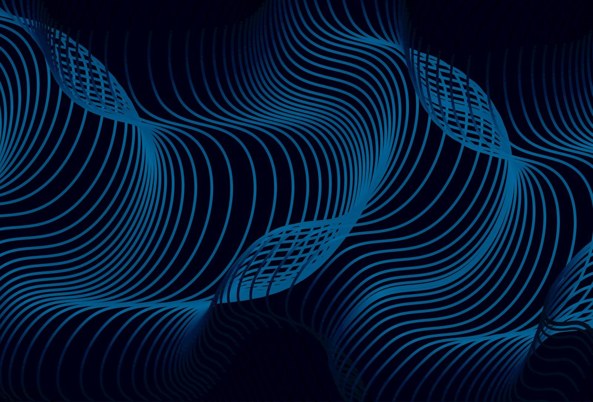

Design comp — not the live site — Inveenta editorial direction · existing imagery, brand palette unchanged
Part 1 — Type routes · same headline, three treatments
Route AMontserrat only · extreme scale contrast · zero brand risk
Run leaner. Scale faster.
Assessment
Safest option — no change to your brand guidelines. Montserrat is geometric and very widely
used, so it stays recognisable as "startup" even at this scale. Improves on today, but
doesn't fully escape the stereotype.
Assessment — recommended
Swiss/editorial design is grotesque-based, not serif-based. Tighter, more neutral, more
engineered than Montserrat — and the mono labels read as instrumentation, which suits a firm
that builds operational systems. Ships as self-hosted Inter or Söhne.
Route CEditorial serif display + Montserrat body + mono labels
Run leaner. Scale faster.
Assessment
Most obviously "premium", but a serif pulls toward law firm / private bank / management
consultancy. Distinctive, and a real option if you want to look less like a software vendor —
just be sure that's the association you want.
Part 2 — Hero, route B applied · no fake dashboard, no invented metrics

inveenta
— 01 / Operations
Run leaner. Scale faster.
Inveenta designs and builds custom enterprise software that turns complex, manual operations
into governed, scalable systems — engineered around how your business actually works.
Same file, no re-editing. Grading every photo to a single navy duotone removes the warm, colourful,
recognisably-Unsplash quality and collapses sixteen unrelated images into one deliberate visual
system. Lime then becomes the only colour on the page — which is why it reads as a decision rather
than a stock library.